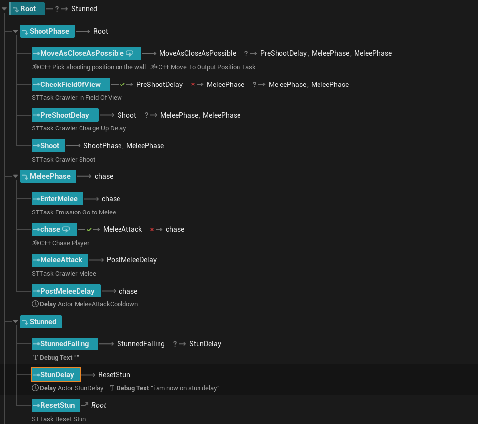
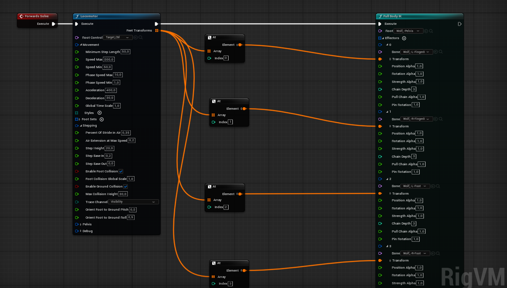
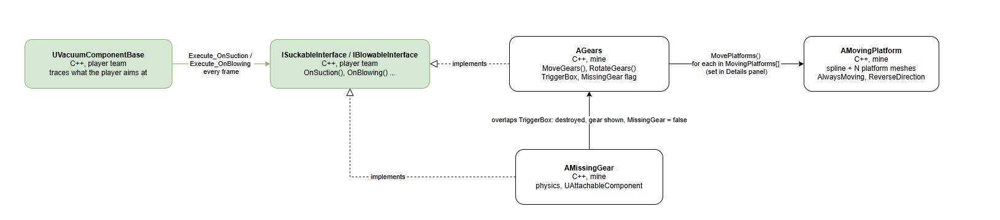
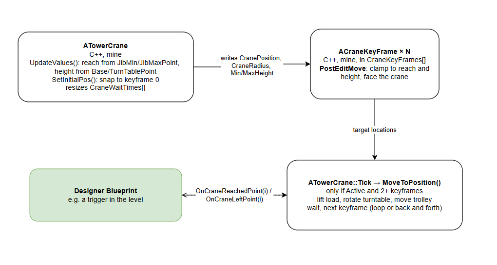
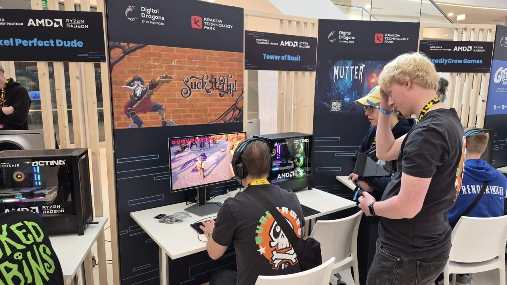
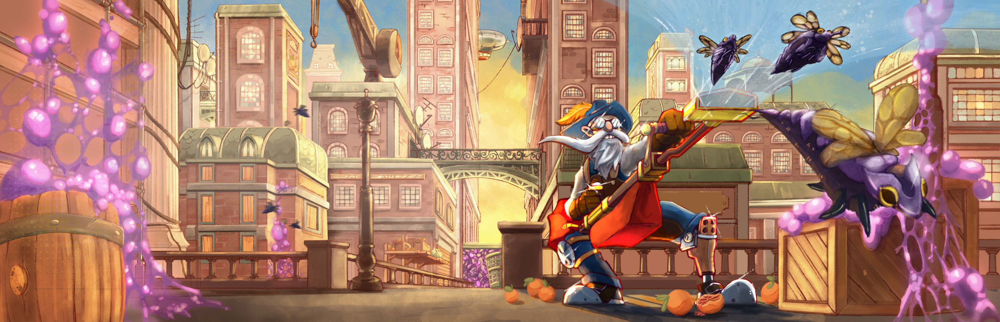

Suck it Up is a third-person action game about a vacuum cleaner that can suck up and shoot almost anything, made by a team of 25 students over 24 weeks and released on Steam. I built the crawler: the wall-climbing spider that became the game's main enemy, from its behaviour and its integration with the Dynamic Surface Navigation plugin to, together with Lars, its procedural leg animation. Before that I built level ingredients like a gear system and a tower crane, and our team's first concept prototype.
The crawler · Navigation
The crawler is a spider that climbs walls and ceilings, shoots acid from a distance and swarms the player up close. It started out as one of several enemies and ended up as the main enemy of the game. Larisa designed it and wrote its feature spec, I built it, and we kept iterating on the design together throughout production. Its movement started from the wall-walking lizard in my concept prototype.
The crawler is spread over several C++ classes, Blueprints and assets, each with its own job. Anything that talks to the plugin, to Unreal's asynchronous systems or to other C++ code is written in C++. What designers tune lives in Blueprints, the State Tree and a data asset, so they can change the crawler without a programmer.
Unreal's navigation has no support for walking on walls and ceilings, so the first problem was getting the crawler there at all.
Our own navmesh. Together with Lars and Javier, the plan was to generate a navmesh over every surface and pathfind over it with A*.
We dropped it once it was clear it would take all three of us far too long for a single enemy.
Steering without a navmesh. Next I tried a force-based approach, loosely inspired by Craig Reynolds' steering behaviours:
keep raycasting to stick to the surface below, and steer towards the player along the surface plane.
I ported my prototype's movement to C++ for this, but we kept finding edge cases without a good answer,
like the player being straight above or below the surface, where the direction to them projects to nothing on that plane.
A plugin. Then our animator Daniela told me the school had bought
Dynamic Surface Navigation (DSN) for a team the year before.
It's a plugin by BMK Games that generates navigation over ground, walls and ceilings, with async pathfinding and EQS support.
A one-day demo showed it did what we needed, so I switched to it.
The movement and pathfinding over surfaces are the plugin's. My work was making it fit our game and building the crawler on top of it,
including working around bugs in its EQS integration, and writing my own move task when the standard one didn't work with the plugin's movement.
All our enemies inherit from a shared base enemy class, which other parts of the game rely on, but the plugin expects you to use its own pawn class.
Making the plugin's pawn inherit from our base class doesn't work, because the plugin is a separate module that can't depend on the game.
Moving our base class into its own module would have fixed the compile order, but it would have singled out one piece of game logic for no good reason.
It turned out the plugin never uses its pawn class polymorphically. So I made a crawler base class that inherits from our enemy base,
and does the same setup as the plugin's pawn: it creates the plugin's movement component and points it at our root component.
// Copied SurfaceNavPawn setup to adjust for our game. Namely inheriting Base enemy class.
// Done like this to avoid circular dependencies or adjusting the base class for one enemy.
UCLASS(config = Game, BlueprintType, Blueprintable, Abstract)
class SUCK_API ABaseCrawlerEnemyClass : public ABaseEnemyClass
{
GENERATED_BODY()
public:
ABaseCrawlerEnemyClass();
void BeginPlay() override;
UPROPERTY(Category = "Surface Nav Pawn", VisibleAnywhere, BlueprintReadOnly, meta = (AllowPrivateAccess = "true"))
USurfaceNavMovementComponent* SurfaceNavMovement;
UPROPERTY(Category = "Settings", VisibleAnywhere, BlueprintReadOnly, meta = (AllowPrivateAccess = "true"))
bool bOnlyMelee = false;
// ...
};
void ABaseCrawlerEnemyClass::BeginPlay()
{
if (SurfaceNavMovement)
{
SurfaceNavMovement->SetUpdatedComponent(RootComponent);
}
Super::BeginPlay();
}BaseCrawlerEnemyClass — the plugin's pawn setup, moved onto our enemy base (shortened)
The crawler · Behaviour
The crawler's behaviour lives in a State Tree. The tree decides when to switch states and every task does one thing, so designers can rearrange the behaviour without touching code. A crawler starts in its shoot phase: it moves as close as it can to a good spot, checks it is in the player's view, charges up and shoots. In its melee phase it chases the player and attacks, and from either phase it can be knocked into the stunned phase.

There was hardly any documentation on writing State Tree tasks in C++, so I learned how from the tasks that ship with Unreal, in the engine source. A task or condition is a struct, with its data in a separate instance data struct. Every UPROPERTY in that struct shows up in the State Tree editor, where designers can type in a value or bind it to another task's output. That is how the pick-position task hands its result to the move task, without either of them knowing about the other.
USTRUCT()
struct SUCK_API FPickShootingPositionOnWallTaskInstanceData
{
GENERATED_BODY()
// input
UPROPERTY(EditAnywhere, Category = "Input")
TObjectPtr<UEnvQuery> ShootingPositionOnTheWallQueryTemplate;
UPROPERTY(EditAnywhere, Category = Context)
ABaseEnemyClass* EnemyActor = nullptr;
UPROPERTY(EditAnywhere, Category = "Input")
float SwitchToMeleeRange = 0.f;
UPROPERTY(EditAnywhere, Category = "Input")
float MaxShootingRange = 0.f;
TSharedPtr<FEQSQueryBridge> Bridge;
int32 QueryID = INDEX_NONE;
//output
UPROPERTY(EditAnywhere, Category = "Output")
FVector ResultLocation = FVector::ZeroVector;
};PickShootingPositionOnWallTask.h — inputs designers can set or bind, and an output the move task binds to
Conditions work the same way. The line of sight condition asks the State Tree for the AI controller and the pawn it runs on, which the tree links up once, and then only has to do a single trace whenever it is tested. It also has an invert option, so the same condition can mean "can see the player" and "lost sight of the player".
bool FHasLineOfSightToPlayerCondition::Link(FStateTreeLinker& Linker)
{
Linker.LinkExternalData(AIControllerHandle);
Linker.LinkExternalData(PawnHandle);
return true;
}
bool FHasLineOfSightToPlayerCondition::TestCondition(FStateTreeExecutionContext& Context) const
{
const FInstanceDataType& Data = Context.GetInstanceData(*this);
AAIController& Controller = Context.GetExternalData(AIControllerHandle);
APawn& EnemyPawn = Context.GetExternalData(PawnHandle);
// ... find the player pawn, return Data.bInvert if there is none
FHitResult Hit;
FCollisionQueryParams Params;
Params.AddIgnoredActor(&EnemyPawn);
const bool bBlocked = EnemyPawn.GetWorld()->LineTraceSingleByChannel(
Hit, Start, End, Data.TraceChannel, Params);
// Clear LOS = no hit, OR the only thing hit is the player
const bool bHasLOS = !bBlocked || Hit.GetActor() == PlayerPawn;
return Data.bInvert ? !bHasLOS : bHasLOS;
}HasLineOfSightToPlayerCondition.cpp (shortened)
The plugin reports a finished move through a dynamic delegate, which can only call a UFUNCTION on a UObject. State Tree tasks are plain structs, so each move task creates a small listener object for the delegate to call, and checks it on every tick. Figuring that out took a while, since there was almost nothing written about it.
// Needed to access the async broadcast from the plugin. Expects a UFUNCTION from a UCLASS
UCLASS()
class SUCK_API UMoveTaskListener : public UObject
{
GENERATED_BODY()
public:
bool bSucceeded = false;
bool bFailed = false;
UFUNCTION()
void OnSuccess(EPathFollowingResult::Type Result) { bSucceeded = true; }
UFUNCTION()
void OnFail(EPathFollowingResult::Type Result) { bFailed = true; }
};
// In FChasePlayerTask::EnterState()
InstanceData.MoveTask = USurfaceNavAIMoveTo::SurfaceNavAIMoveTo(Context.GetOwner(), Cast<APawn>(InstanceData.TargetActor),
FVector::ZeroVector, PlayerPawn, InstanceData.AcceptanceDistance, nullptr);
if (InstanceData.MoveTask){
InstanceData.Listener = NewObject<UMoveTaskListener>(Context.GetOwner());
InstanceData.MoveTask->OnSuccess.AddDynamic(InstanceData.Listener, &UMoveTaskListener::OnSuccess);
InstanceData.MoveTask->OnFail.AddDynamic(InstanceData.Listener, &UMoveTaskListener::OnFail);
InstanceData.MoveTask->RegisterWithGameInstance(Context.GetOwner());
InstanceData.MoveTask->Activate();
return EStateTreeRunStatus::Running;
}
return EStateTreeRunStatus::Failed;ChasePlayerTask.h / ChasePlayerTask.cpp (shortened)
The trickiest rule in the design: while other enemies are still alive, a crawler should stay on its building and never touch the ground,
while still finding a spot with a clear shot at the player.
I solved this with an EQS query. Using the plugin's EQS support, it generates points on the surfaces around the crawler,
throws away points without line of sight and points that aren't connected to the same building, and scores the rest on distance.
The minimum and maximum distance come from the crawler's data asset and are passed into the query as named parameters.
The query runs asynchronously, and its result can arrive after the task has already been exited.
So the callback only writes into a small shared struct that it keeps alive itself, and the task picks up the result on its next tick.
The move task, running alongside it in the same state, starts moving as soon as the bound position comes in.
InstanceData.Bridge = MakeShared<FEQSQueryBridge>();
TSharedPtr<FEQSQueryBridge> BridgeRef = InstanceData.Bridge;
FEnvQueryRequest Request(InstanceData.ShootingPositionOnTheWallQueryTemplate, InstanceData.EnemyActor);
Request.SetFloatParam("Distance.FloatValueMin", InstanceData.SwitchToMeleeRange);
Request.SetFloatParam("Distance.FloatValueMax", InstanceData.MaxShootingRange);
InstanceData.QueryID = Request.Execute(EEnvQueryRunMode::SingleResult,
FQueryFinishedSignature::CreateLambda(
[BridgeRef](TSharedPtr<FEnvQueryResult> Result)
{
if (!BridgeRef.IsValid()) return;
BridgeRef->bComplete = true;
if (!Result.IsValid())
{
BridgeRef->bSuccess = false;
return;
}
if (Result->IsSuccessful() && !Result->Items.IsEmpty())
{
BridgeRef->bSuccess = true;
BridgeRef->Result = Result->GetItemAsLocation(0);
}
else
{
BridgeRef->bSuccess = false;
}
}
)
);FPickShootingPositionOnWallTask::EnterState() — PickShootingPositionOnWallTask.cpp (logging removed)
In shooting mode a crawler moves to its spot, charges up its acid, which glows brighter as the shot gets closer, and fires.
Once it switches to melee mode it chases the player down and attacks up close, and it never goes back to shooting.
Through playtesting the rules for switching to melee grew to six: only crawlers are left, the player gets too close,
the spawner set it to melee only, there is no valid shooting spot, it has used its three shots, or it has been off screen for three seconds.
The last two came out of a design discussion with Larisa. Our level designers wanted to remove shooting altogether, and we both thought that was too rash.
Larisa suggested only shooting while on screen. I added the three-second timer, so you can't get rid of every shooter just by turning the camera away,
and the three-shot limit, so crawlers can't keep pummelling you from up high.
The melee-only rule needed a change outside my own code: Sebastian's wave spawner got an extra option per entry, which it passes on to every crawler it spawns.
//crawlers can be set to melee only
UPROPERTY(EditAnywhere, BlueprintReadWrite, Category = "Advanced")
bool bCrawlerMeleeOnly = false;
// In AWaveSpawner, after spawning an entry's enemy
// Crawlers have an extra setting
if (SpawnedEnemy->IsA<ABaseCrawlerEnemyClass>()) {
auto* crawler = Cast<ABaseCrawlerEnemyClass>(SpawnedEnemy);
crawler->bOnlyMelee = Entry.bCrawlerMeleeOnly;
}WaveSpawner.h / WaveSpawner.cpp — my addition to the spawner
Unreal already had a better pattern for EQS. My move task waits until the bound target position stops being zero,
which breaks if a result is ever exactly the world origin. Unreal ships a Run Env Query task that is
meant to run in a sibling state
and store its result in the parent state's parameters, after which a separate state uses it. That keeps the two steps cleanly apart.
The async tasks could be leaner. Every move task polls flags on a listener each tick, and the listener class is duplicated between tasks.
A State Tree can hand a weak execution context
to a callback, which can finish the task directly instead. The tasks also don't clean up when their state exits early:
the EQS query is never aborted and the move is never stopped. That belongs in ExitState.
The crawler · Animation
Procedural animation was one of the project's biggest technical risks, so I started on it as soon as pre-production began. After looking into IK and FK, I found Locomotor, an experimental plugin in Unreal 5.6 that handles foot placement and step timing inside Control Rig. I tested it in a separate project, including in packaged builds, to make sure an experimental plugin wouldn't break on us, and recommended it to the team. Building our own system would easily have taken one programmer for the rest of the project.

In the final block, Lars and I set up Locomotor rigs for our two enemies: my six-legged crawler and his four-legged walker.
Being experimental, the plugin needed a lot of digging through its source code. Lars found that it caches the hip position and overrides the rig,
and that the difference between simulation space and rig space was messing with the rotation.
On the crawler that second problem went away, because the surface navigation was already forcing the actor's rotation.
The biggest problem was that the rig trailed far behind the actor, so hitboxes and pathfinding no longer matched the mesh you see.
Lars was close to writing his own version of Locomotor. Instead, I treated the actor as the destination and let the rig follow it:
I matched the rig's movement settings to the enemy's so it trails as little as possible,
and every frame I move the hit and collision boxes to their bones, so everything that matters for gameplay trails along with the mesh.
You don't notice it while playing, and Lars ended up using the same fix for the walker.
On top of the procedural legs I layered the handmade idle, shoot, melee and stun animations from our animator.
The State Tree leads the idle and stun, but for the attacks the animation has to take the lead,
so an animation notify triggers the shot at the right frame and then hands control back to the State Tree.
Hitting a crawler on a wall with a physics object knocks it off. The mesh flips upside down while the actor stays upright,
the actor arcs away from the wall and falls, the crawler lies stunned on its back, and then flips back up and carries on.
With the plugin, the Control Rig and the State Tree all fighting over the crawler's orientation, every setting changed during the fall has to be put back afterwards.
The crawler · Supporting systems
Enemy values were spread over Blueprints, State Trees and individual tasks, which made balancing slow.
I compared a primary data asset per enemy with a custom developer settings page, and went with data assets:
they were simpler to set up, and every enemy gets its own file, which means fewer Perforce conflicts.
I set up a C++ base data asset with every shared value, and a function on the base enemy class that copies them onto an enemy,
routing health through the health component instead of the enemy itself. Every enemy only had to add its own values on top.
I also wrote a short page on how to use it, after Javier pointed out that it wasn't obvious.
void ABaseEnemyClass::InitFromDataAsset(UBaseEnemyDataAsset* DataAsset)
{
if (!ensureMsgf(IsValid(DataAsset), TEXT("ABaseEnemyClass::InitFromDataAsset - DataAsset is null on %s"), *GetName()))
{
return;
}
// Health (routed through HealthComponent)
if (ensureMsgf(IsValid(HealthComponent), TEXT("ABaseEnemyClass::InitFromDataAsset - HealthComponent is null on %s"), *GetName()))
{
HealthComponent->MaxHealth = DataAsset->MaxHealth;
HealthComponent->Health = DataAsset->MaxHealth; // start at full health
HealthComponent->bDestroyOnDeath = DataAsset->bDestroyOnDeath;
// ...
}
// Combat
Damage = DataAsset->Damage;
AttackCooldown = DataAsset->AttackCooldown;
AttackAnimation = DataAsset->AttackAnimation;
// ... movement, AI, death and VFX values
STUsed = DataAsset->STUsed;
}ABaseEnemyClass::InitFromDataAsset() — BaseEnemyClass.cpp (shortened)
Some players asked for an arachnophobia mode, so I added one that swaps every spider for a flat cat picture. Our settings menu stored everything through Unreal's GameUserSettings, and I was told it could only hold Unreal's own settings. Reading the engine source showed you can subclass it, so I did: a Config property is saved to the user's settings file, and Blueprint-callable functions let the menu and the crawlers read and change it.
UCLASS()
class SUCK_API USuckGameUserSettings : public UGameUserSettings
{
GENERATED_BODY()
public:
// -- Gameplay --
// Arachnaphobia
UPROPERTY(Config)
bool bArachnophobiaMode = false;
UFUNCTION(BlueprintPure, Category = "Settings")
bool GetArachnophobiaMode() const { return bArachnophobiaMode; }
UFUNCTION(BlueprintCallable, Category = "Settings")
void SetArachnophobiaMode(bool bEnabled) { bArachnophobiaMode = bEnabled; SaveSettings(); }
// ...
UFUNCTION(BlueprintCallable)
static USuckGameUserSettings* GetSuckGameUserSettings() { return Cast<USuckGameUserSettings>(UGameUserSettings::GetGameUserSettings()); }
};SuckGameUserSettings.h (shortened)
The data asset needed a manual call. The shared values only get copied onto an enemy if someone remembers to call the function, and Javier rightly pointed out how easy that is to miss. Calling it automatically when the enemy spawns, or reading straight from the asset instead of keeping copies on every enemy, would remove that trap.
Level ingredients · Gears
During pre-production I joined the level team and built the level ingredients designers asked for.
I built each one in Blueprints first, so designers could use it and give feedback straight away, and then rebuilt it in C++.
The C++ versions ended up with more features, and they are a good example of several small classes working together.
The gear system was designed by our level designers: suck or blow on a set of gears to turn them, which moves platforms elsewhere in the level.
Some gear systems are missing a gear, which the player has to find, carry over with the vacuum and blow back into place.

The player's vacuum, built by the player team, traces whatever you aim at and calls the suckable or blowable interface on it every frame. It doesn't need to know what a gear is. The gears implement both interfaces: sucking turns them one way and blowing the other, and every frame of input moves all linked platforms a little in that direction.
void AGears::OnSuction_Implementation(UVacuumComponentBase* Vacuum)
{
ISuckableInterface::OnSuction_Implementation(Vacuum);
if (!MissingGear)
{
MoveGears(1);
}
}
void AGears::OnBlowing_Implementation(UVacuumComponentBase* Vacuum)
{
IBlowableInterface::OnBlowing_Implementation(Vacuum);
if (!MissingGear)
{
MoveGears(-1);
}
}
void AGears::MoveGears(int MoveDirection)
{
//go through list of all platforms and tell them to move
if (MovingPlatforms.Num() == 0) {
UE_LOG(LogTemp, Error, TEXT("AGears: No moving platforms defined!"));
// ... also shown on screen, so designers notice
}
else
{
for (int32 i = 0; i < MovingPlatforms.Num(); i++) {
MovingPlatforms[i]->MovePlatforms(MoveDirection);
}
}
//rotate the gears
RotateGears(MoveDirection);
}Gears.cpp (shortened)
A moving platform actor holds a spline and any number of platforms, spaced evenly along it. Designers draw the spline, pick a mesh and a platform count, and choose whether the platforms always move or only when a gear drives them. When the platforms move, they all advance along the spline together and wrap around at the end, like a paternoster lift.
void AMovingPlatform::MovePlatforms(int Direction) {
Direction = ReverseDirection ? Direction : -Direction;
float SplineLength = SplineComponent->GetSplineLength();
auto Spacing = (SplineLength / NumberOfPlatforms);
auto DeltaTime = GetWorld()->DeltaTimeSeconds;
CurrentDistAlongSpline += DeltaTime * MovementSpeed * Direction;
CurrentDistAlongSpline = CurrentDistAlongSpline >= SplineLength ? CurrentDistAlongSpline - SplineLength : CurrentDistAlongSpline;
CurrentDistAlongSpline = CurrentDistAlongSpline < 0 ? SplineLength : CurrentDistAlongSpline;
for (int32 i = 0; i < NumberOfPlatforms; i++)
{
float DistAlongSpline = ((i * Spacing) + CurrentDistAlongSpline);
DistAlongSpline = DistAlongSpline >= SplineLength ? DistAlongSpline - SplineLength : DistAlongSpline;
PlatformMeshes[i]->SetWorldLocation(SplineComponent->GetLocationAtDistanceAlongSpline(DistAlongSpline, ESplineCoordinateSpace::World));
}
}MovingPlatform.cpp
The missing gear is its own physics actor, with an attachable component so the vacuum can hold it. A gear system marked as missing a gear hides that gear and ignores the vacuum. When the missing gear lands in its trigger box, the loose gear is removed, the real one appears and the system starts working.
void AGears::OnTriggerBoxBeginOverlap(UPrimitiveComponent* OverlappedComponent, AActor* OtherActor, UPrimitiveComponent* OtherComp, int32 OtherBodyIndex, bool bFromSweep, const FHitResult& SweepResult)
{
auto* MissingGearActor = Cast<AMissingGear>(OtherActor);
if (MissingGearActor && MissingGear) {
MissingGearActor->Destroy();
MissingGear = false;
Gear2Mesh->SetVisibility(true);
}
}Gears.cpp
Designers can't see the platforms until they press play. The platform meshes are created in BeginPlay,
so in the editor you only see the spline. Creating them in OnConstruction would show the real layout while you design the level.
Moving backwards doesn't wrap cleanly. Going past the start of the spline snaps the platforms to the end,
instead of carrying over the distance they overshot, which causes a tiny jump each loop.
Level ingredients · Crane
Our level designer Max wanted a cargo crane the player could ride. The requirements were a tool to keyframe its movement, a crane that is either always moving or started by an event, and a unique path for every crane. I built it as two classes: the crane itself, and keyframe actors that designers place in the level and add to the crane's list.

The crane doesn't hard-code its size. Scene components on the mesh mark the jib's minimum and maximum reach and the top and bottom of the mast, so if the model changes, you only move those points and the numbers follow. Whenever the crane is built, moved or edited in the editor, it recalculates its reach and height and pushes them to all its keyframes. Editing the keyframe list also resizes the list of wait times, so there is always one per keyframe.
void ATowerCrane::PostEditChangeProperty(FPropertyChangedEvent& PropertyChangedEvent)
{
Super::PostEditChangeProperty(PropertyChangedEvent);
UpdateValues();
if (PropertyChangedEvent.Property && PropertyChangedEvent.Property->GetFName() == GET_MEMBER_NAME_CHECKED(
ATowerCrane, CraneKeyFrames))
{
CraneWaitTimes.SetNum(CraneKeyFrames.Num());
}
}
void ATowerCrane::UpdateValues()
{
if (JibMinPoint && JibMaxPoint)
{
FVector Loc1 = JibMinPoint->GetComponentLocation();
FVector Loc2 = JibMaxPoint->GetComponentLocation();
Radius = FVector::DistXY(Loc1, Loc2);
}
// ... height range from BasePoint and TurnTablePoint
//update all towercrane keyframes
for (int32 i = 0; i < CraneKeyFrames.Num(); i++)
{
if (CraneKeyFrames[i])
{
CraneKeyFrames[i]->CranePosition = GetActorLocation();
CraneKeyFrames[i]->CraneRadius = Radius;
CraneKeyFrames[i]->CraneMinHeight = Loc1.Z;
CraneKeyFrames[i]->CraneMaxHeight = Loc2.Z;
}
// ...
}
}TowerCrane.cpp (shortened)
Each keyframe uses those numbers in its own PostEditMove. While a designer drags it around the level, it is clamped to the crane's reach and height, and turned to face the crane, so it is impossible to place a keyframe the crane can't get to.
#if WITH_EDITOR
void ACraneKeyFrame::PostEditMove(bool bFinished)
{
Super::PostEditMove(bFinished);
if(CraneRadius)
{
auto MyWorldPos = GetActorLocation();
MyWorldPos -= CranePosition;
FVector2D HorizontalPos(MyWorldPos.X, MyWorldPos.Y);
if (HorizontalPos.Size() > CraneRadius)
{
HorizontalPos.Normalize();
HorizontalPos *= CraneRadius;
MyWorldPos.X = HorizontalPos.X;
MyWorldPos.Y = HorizontalPos.Y;
}
MyWorldPos += CranePosition;
MyWorldPos.Z = FMath::Clamp(MyWorldPos.Z, CraneMinHeight, CraneMaxHeight);
SetActorLocation(MyWorldPos);
FVector Direction = (CranePosition - MyWorldPos).GetSafeNormal();
Direction.Z = 0;
FRotator LookAtRotation = Direction.Rotation();
SetActorRotation(LookAtRotation);
}
}
#endifACraneKeyFrame::PostEditMove() — TowerCraneKeyframe.cpp
At runtime the crane works on three parts at once: it lifts the load, turns the turntable towards the keyframe, and slides the trolley along the jib. The cable mesh scales with the lift height, and in the editor the crane snaps to its first keyframe, so designers see where it starts. To place the trolley, the crane maps the keyframe's distance from the mast onto the jib's local axis.
// Move trolley
float TargetDistance = FVector::Dist2D(CranePos, Position);
FVector TrolleyPos = TrolleyMesh->GetRelativeLocation();
float MinY = JibMinPoint->GetRelativeLocation().Y;
float MaxY = JibMaxPoint->GetRelativeLocation().Y;
float MinReach = FVector::Dist2D(JibMinPoint->GetComponentLocation(), CranePos);
float MaxReach = FVector::Dist2D(JibMaxPoint->GetComponentLocation(), CranePos);
float TargetY = FMath::GetMappedRangeValueClamped(FVector2D(MinReach, MaxReach), FVector2D(MinY, MaxY), TargetDistance);
if (!FMath::IsNearlyEqual(TrolleyPos.Y, TargetY, 1.0f))
{
TrolleyPos.Y = FMath::FInterpConstantTo(TrolleyPos.Y, TargetY, DeltaTime, TrolleySpeed);
TrolleyMesh->SetRelativeLocation(TrolleyPos);
DestinationReached = false;
}ATowerCrane::MoveToPosition() — TowerCrane.cpp (shortened)
Once all three parts have arrived, the crane waits for that keyframe's wait time, then moves on, either looping or going back and forth. Arriving at and leaving a keyframe are Blueprint events, and Active can be switched from Blueprints, so designers can start a crane from a trigger or react the moment the load arrives, without any extra C++.
DECLARE_DYNAMIC_MULTICAST_DELEGATE_OneParam(FOnCraneReachedPoint, int, index);
DECLARE_DYNAMIC_MULTICAST_DELEGATE_OneParam(FOnCraneLeftPoint, int, index);
UPROPERTY(BlueprintAssignable, Category = "TowerCrane")
FOnCraneReachedPoint OnCraneReachedPoint;
UPROPERTY(BlueprintAssignable, Category = "TowerCrane")
FOnCraneLeftPoint OnCraneLeftPoint;
// In MoveToPosition(), once lift, turntable and trolley have all arrived
if (DestinationReached)
{
bAtKeyFrame = true;
CurrentWaitTime = 0.0f;
float WaitTime = CraneWaitTimes.IsEmpty() ? 0.5f : CraneWaitTimes[CurrentKeyFrameNumber];
if (WaitTime > 0.0f)
OnCraneReachedPoint.Broadcast(CurrentKeyFrameNumber);
}TowerCrane.h / TowerCrane.cpp (shortened)
Keyframes didn't need to be actors. Unreal can show vector properties as draggable widgets in the viewport with the MakeEditWidget meta tag. A list of keyframe positions on the crane itself would have meant fewer actors for designers to manage.
Early work
In the first weeks, small groups each pitched and prototyped their own game. Ours was a stealth game about a lizard
that can climb any surface, and as the group's only programmer I built its proof of fun in Blueprints in a few days.
The lizard uses a floating pawn movement component, with raycasts below it reading the angle of the surface so it can align to it.
Walls and ceilings were the easy part. The hard part was walking over a convex corner, because past the edge there is nothing below the lizard for a ray to hit.
So the corner has to be detected first, and then a ray is cast from in front of the lizard back down under the edge to find the new surface.
I also added patrolling guards that walk between waypoints designers can place, for the stealth side.
Our concept wasn't picked, and the team went with the vacuum cleaner game instead. The prototype still came in handy later: when the team wanted a wall-crawling enemy, its movement was my starting point.
Team
Suck it Up was by far the biggest team I had worked in: 25 students across programming, design, art and production. The project had real problems, and most of them came down to how hard it is to work at that size.
We moved into production too soon. Concepting went fast, and the vision wasn't aligned yet.
While preparing the pitch presentation I found that people saw the game as a combat game, a platformer or a puzzler.
I gathered everyone's views and called a meeting to set it straight, but we went into production while much of the game was still prototype work,
and the tech debt from that stayed with us until the end.
Ownership and communication were unclear. People often didn't know who owned what, and changes that affected others weren't always announced.
An artist modelled a crane that didn't work with the crane system I had built, and a change to the base enemy class messed up the flying enemy's AI.
Blueprints versus C++ was a constant tension. When the base enemy class turned out to be built in Blueprints,
I called the programmers together, and with a lecturer's input we had it rebuilt in C++, so C++ classes like mine could build on it.
The crawler kept getting more complex. Problems found in playtests were usually solved by adding rules rather than simplifying,
which made the enemy hard to keep in your head and caused a lot of my bugs.
I tried to help where I could. I found extra work for programmers who felt they had too little, kept artists up to date when a design changed, helped run build reviews, and in the last weeks started joining other teams' meetings to turn long discussions into bug fixes handed to specific people.

In the final block I flew to Kraków with the school to show Suck it Up in the indie zone at Digital Dragons.
For two days I ran our booth and playtested the game with visitors, about nine hours in total, and many of them were industry professionals.
I wrote everything down as it happened and sent it to the team the same day, so they could prioritise it straight into the next sprint.
Most of the feedback was about the player and the vacuum rather than my own systems, so a big part of the work was explaining it and pushing for the changes.
These are some of the ones that made it into the game:
Two scrapped navigation approaches felt like wasted time. But building them taught me what the problem actually was, which made it easy to judge the plugin, and much easier to work around its problems later. The same goes for Locomotor and GameUserSettings: both only did what we needed once I read their source instead of treating them as black boxes.
Every playtest added another rule to the crawler, and every rule could interact with the others. By the end, most of my bug fixes were about cases nobody had thought through together. Next time, when a design problem comes up, I want to ask what we can take away before deciding what to add.
My showcasing came in waves. Peers kept telling me they didn't know the state of the crawler, even though I always knew it myself. Documentation is the same: the page explaining the data asset took me about three minutes to write, and saved three teammates a lot of time later. The habit I'm building now: at the end of every week, ask whether someone across the room knows what I did.
For most of the project I focused on my own feature. In the last weeks I started joining other teams' meetings, listening to their problems and pulling in programmers who had time, and progress sped up noticeably. Several professionals at Digital Dragons told me that's exactly the step they like to see. I want to keep doing it, without becoming bossy.
